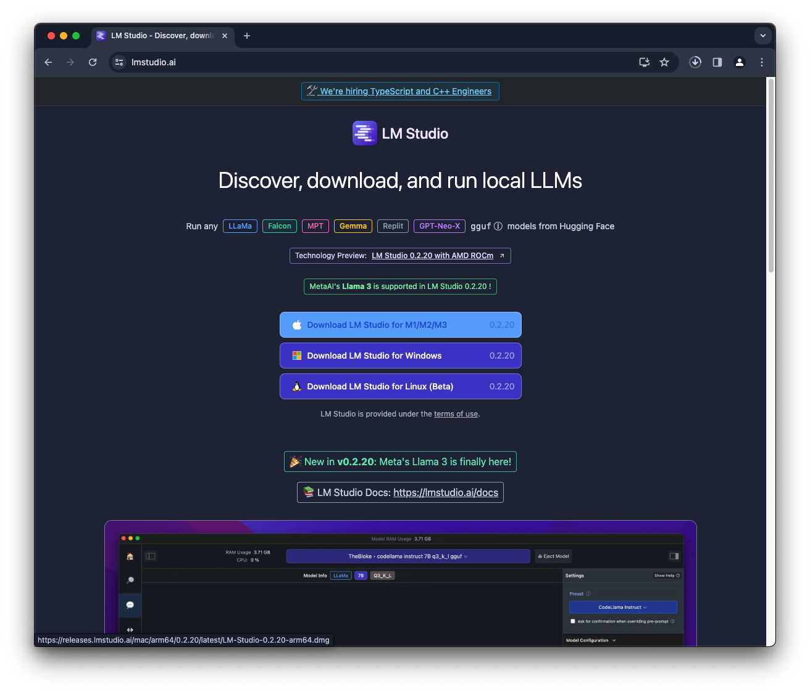
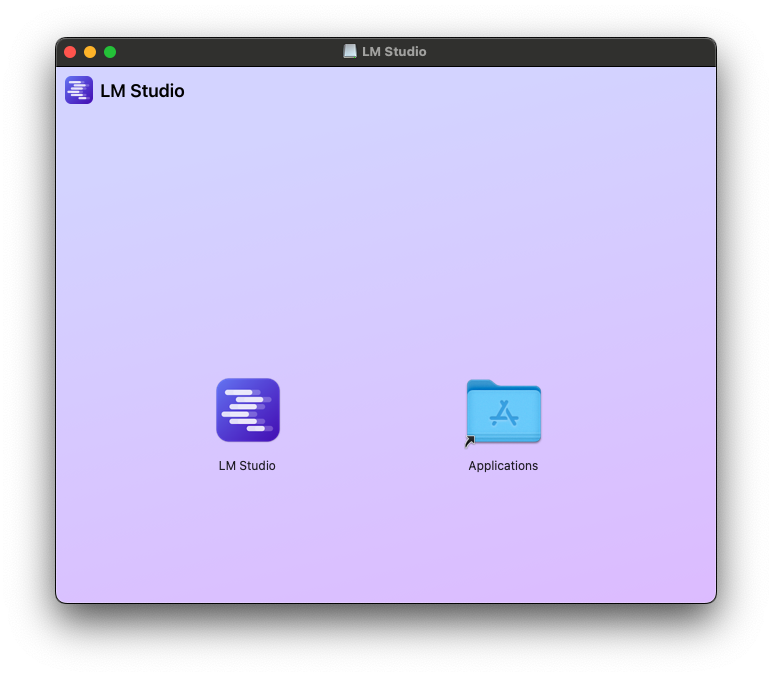
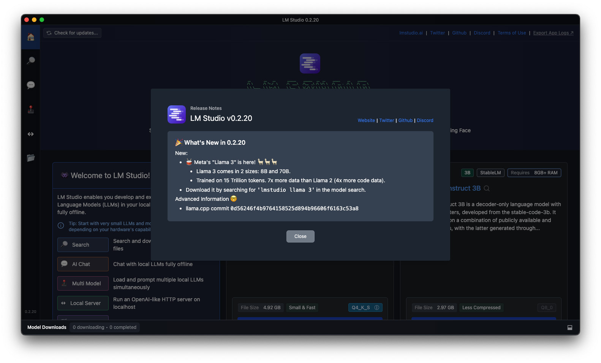
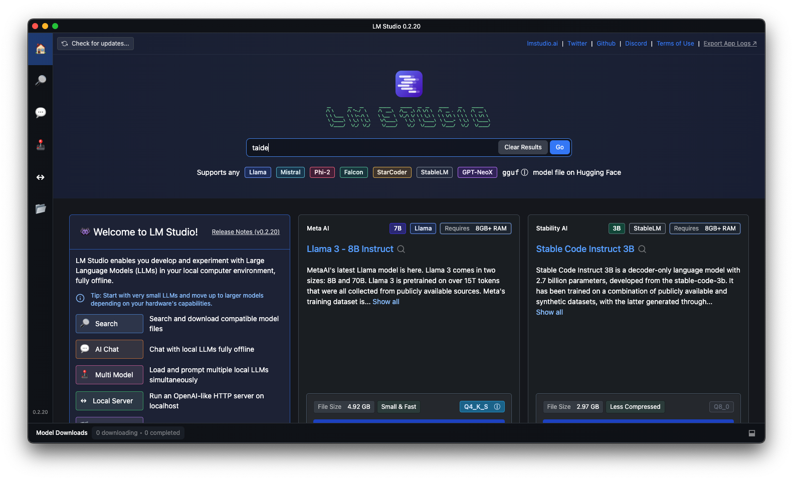
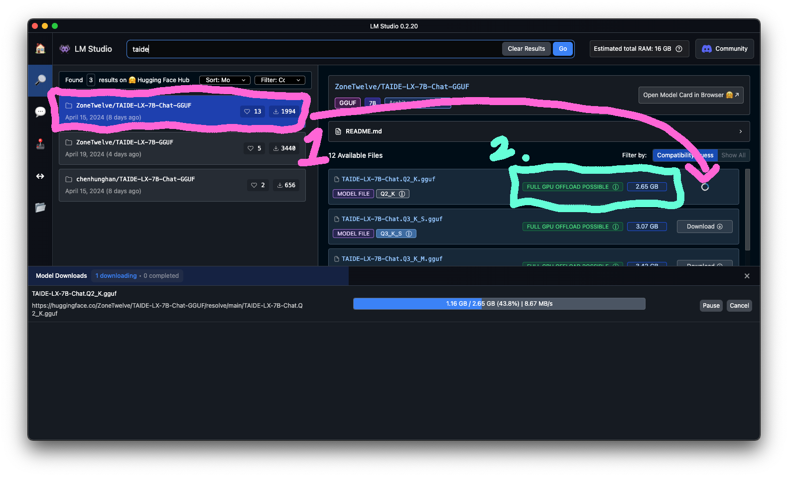
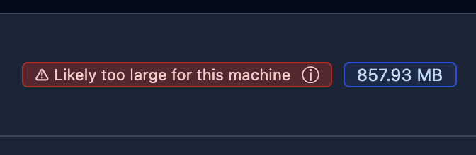
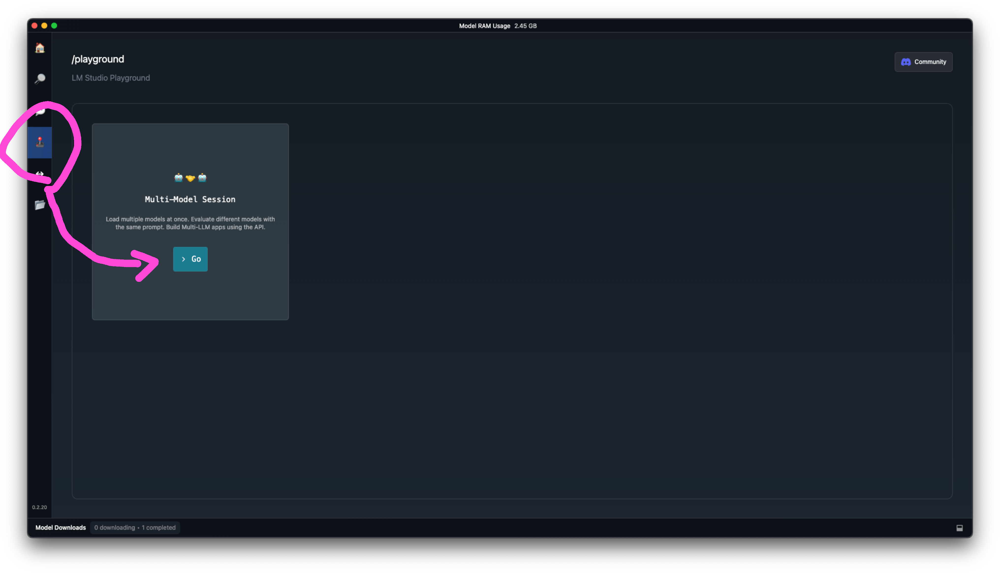
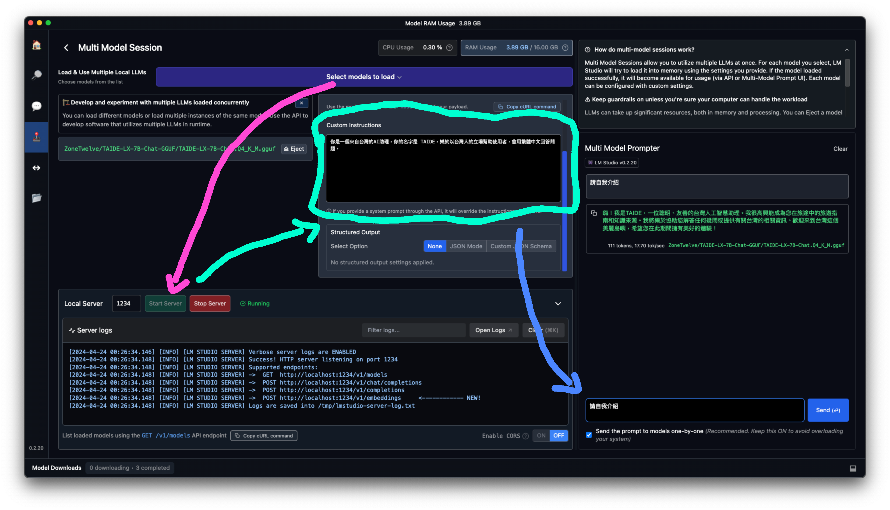

前言
近年來，人工智慧(AI)的快速發展引起了廣泛的關注和討論。許多人對 AI 的崛起感到焦慮，擔心自己的工作可能被 AI 取代，進而影響生計。然而，與其恐懼 AI，不如主動學習並運用 AI 工具來提升自己的工作效率和競爭力。
本文將分為上下兩篇，手把手教你如何在自己的筆記型電腦上使用台灣在地化的語言模型 TAIDE。上篇將介紹如何透過 LM Studio 應用程式在本地端運行 TAIDE 模型；下篇則會進階說明如何利用 AnythingLLM 平台更靈活地使用 TAIDE。
讓我們一起擁抱 AI 浪潮，化危機為轉機，開啟全新的工作與學習體驗吧！
介紹
關於 TAIDE
根據 TAIDE 官方 Huggingface 介紹 「TAIDE計畫 致力於開發符合台灣語言和文化特性的生成式人工智慧對話引擎模型，同時建構可信任的人工智慧環境。結合產學研能量，推動可信任生成式人工智慧的發展，提升台灣在國際競爭中的地位，促進產業發展，避免對外國技術的依賴。」
簡單扼要地說，TAIDE 是一個台灣在地化的語言模型，雖然我習慣使用外語學習，但是使用中文學習起來還是更輕鬆一些。
面對這波的 AI 浪潮，我想藉由這次 TAIDE 模型的釋出，撰寫一篇手把手的教學文章，希望可以幫助大家跟上 AI 的腳步。讓我們一起來學習如何在筆電上使用 TAIDE 吧！
前情提要
這次教學會需要對電腦文件管理以及網路使用有基本的了解，不會太難，但需要大家跟緊一點，我會盡量講解得詳細易懂。
我們這次教學會用到以下工具(稍後會進一步說明):
- 官方模型 TAIDE-LX-7B-Chat (https://huggingface.co/taide/TAIDE-LX-7B-Chat)
- TAIDE-LX-7B-Chat-GGUF
- 使用 TAIDE 之前必須了解一下 TAIDE 的使用者規範
- LM Studio
- Anything LLM
使用 LM Studio 在本地端運行 TAIDE
LM Studio 是一款強大的應用程式，讓您可以在筆記型電腦上完全離線運行大型語言模型。使用 LM Studio，您可以:
🤖 - 在您的筆記型電腦上完全離線運行大型語言模型
👾 - 通過應用內的聊天界面或相容 OpenAI 的本地伺服器使用模型
📂 - 從 HuggingFace 🤗 存儲庫下載任何相容的模型檔案
🔭 - 在應用程式的首頁中探索新的和值得注意的大型語言模型
LM Studio 支援 Hugging Face 上的任何 ggml Llama、MPT 和 StarCoder 模型(Llama 2、Orca、Vicuna、Nous Hermes、WizardCoder、MPT 等)
最低系統要求:
- M1/M2/M3 Mac電腦
- 支援 AVX2 指令集的 Windows 電腦處理器
- Linux 版本目前處於測試階段
下載與安裝
點擊此連結前往 LM Studio 官網下載應用程式。
將下載的 LM Studio 安裝檔案解壓縮後，將應用程式移動到您電腦的「應用程式」資料夾中。

將 LM Studio 安裝到您的電腦中，然後開啟它，並選擇您要使用的模型。首次開啟 LM Studio 時，會彈出版本資訊視窗，點擊「Close」按鈕關閉並繼續。

選擇並下載 TAIDE 模型
在 LM Studio 的首頁搜尋欄中輸入「TAIDE-LX-7B-Chat」，會列出相關的模型。
在搜尋結果中，選擇「ZoneTwelve/TAIDE-LX-7B-Chat-GGUF」模型。
- 我選擇「Q2_K」版本，因為它最省系統資源(但精確度也最低)。

圖中標示:
- 粉紅色1️⃣: 選擇要使用的模型版本
- 綠色2️⃣: 顯示該模型在您電腦上的評估
- 綠色代表沒有問題
- 藍色表示勉強可以執行
- 紅色則表示您的電腦規格不足以執行該模型
- 我選擇「Q2_K」版本，因為它最省系統資源(但精確度也最低)。
點擊「Download」按鈕，開始下載指定的 TAIDE 模型。下載完成再進行幾個步驟就能開始用了。
使用 TAIDE 模型進行對話
在 LM Studio 主畫面中，點擊左邊選單的「🕹️ Playground」進入模型遊樂場。
在 Playground 畫面中，您可以看到:
- 粉紅色區域: 選擇要使用的模型
- 綠色區域: 模型設定，包括輸入 System Prompt (系統提示)
- 藍色區域: 與 TAIDE 模型進行對話的聊天介面

在聊天介面的輸入欄中輸入您的問題，然後按下 Enter 或點擊發送按鈕，TAIDE 就會給出回應。
您可以在 System Prompt 輸入一些背景資訊或指示，引導 TAIDE 模型生成更符合您需求的回答。
- 我這邊使用的是 TAIDE 官方的範例 System Prompt: 「你是一個來自台灣的AI助理，你的名字是 TAIDE，樂於以台灣人的立場幫助使用者，會用繁體中文回答問題。」
- 探索 TAIDE 模型的各種功能，體驗 AI 技術帶來的便利與樂趣吧！
總結
透過這篇教學，希望大家能夠掌握在自己的筆電上使用 TAIDE 模型的基本方法。利用像 LM Studio 這樣的應用程式，我們可以輕鬆地在本機使用強大的 AI 語言模型，不必擔心隱私問題或網路限制。
尤其是 AI 的發展日新月異，與其躲避恐懼，不如主動學習擁抱。讓我們一起與 AI 共舞！
下篇文章中，我們將進一步探討如何透過 AnythingLLM 平台，利用 RAG 以及 Embedding 模型來進行更靈活、精確的使用。